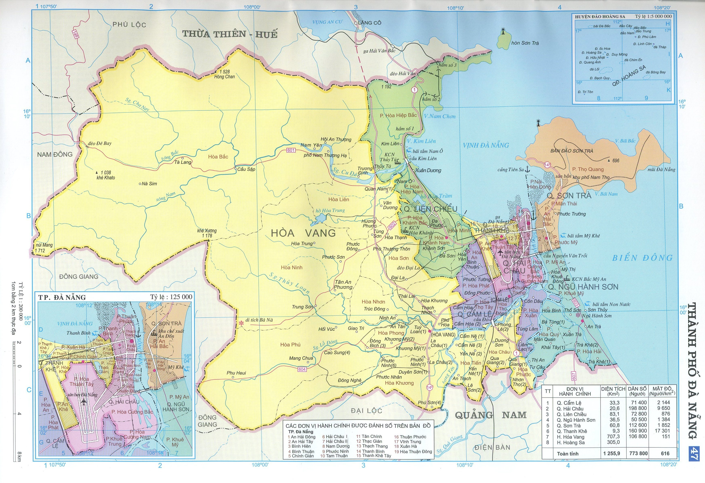

Thông tin Thành phố Đà Nẵng

Đà Nẵng là một thành phố thuộc trung ương, nằm trong vùng Nam Trung Bộ, Việt Nam, là trung tâm kinh tế, tài chính, chính trị, văn hoá, du lịch, xã hội, giáo dục, đào tạo, khoa học và công nghệ, y tế chuyên sâu của khu vực miền Trung - Tây Nguyên và cả nước. Đà Nẵng là thành phố quan trọng nhất miền Trung, đồng thời cũng là một trong 5 thành phố trực thuộc Trung ương ở Việt Nam, đô thị loại 1 trung tâm cấp quốc gia, cùng với Hải Phòng và Cần Thơ.
Đà Nẵng nằm ở vị trí trung độ của Việt Nam, có vị trí trọng yếu cả về kinh tế - xã hội và quốc phòng - an ninh; là đầu mối giao thông quan trọng về đường bộ, đường sắt, đường biển và đường hàng không. Trong những năm gần đây, Đà Nẵng đã tích cực đầu tư xây dựng cơ sở hạ tầng, cải thiện môi trường, nâng cao an sinh xã hội và được coi là "thành phố đáng sống" của Việt Nam. Năm 2018, Đà Nẵng được chọn đại diện cho Việt Nam lọt vào top 10 địa điểm tốt nhất để sống ở nước ngoài do Tạp chí du lịch danh tiếng Live and Invest Overseas (LIO) bình chọn.
Diện tích, dân số và đơn vị hành chính thành phố Đà Nẵng năm 2016
| Đơn vị |
Diện tích tự nhiên (Km2) |
Dân số trung bình (Người) |
Mật độ dân số (Người/ km2) |
Số phường, xã |
| Tổng số |
Tr. đó: Phường |
| TOÀN THÀNH PHỐ |
1.284,88 |
1.046.252 |
814,28 |
56 |
45 |
| I. CÁC QUẬN NỘI THÀNH |
246,71 |
915.002 |
3.708,82 |
45 |
45 |
| 1. Quận Hải Châu |
23,29 |
212.030 |
9.103,91 |
13 |
13 |
| 2. Quận Thanh Khê |
9,47 |
191.541 |
20.226,08 |
10 |
10 |
| 3. Quận Sơn Trà |
63,39 |
159.689 |
2.519,15 |
7 |
7 |
| 4. Quận Ngũ Hành Sơn |
40,19 |
77.821 |
1.936,33 |
4 |
4 |
| 5. Quận Liên Chiểu |
74,52 |
162.453 |
2.179,99 |
5 |
5 |
| 6. Quận Cẩm Lệ |
35,85 |
111.468 |
3.109,29 |
6 |
6 |
| 3. Quận Sơn Trà |
63,39 |
159.689 |
2.519,15 |
7 |
7 |
| II. CÁC HUYỆN NGOẠI THÀNH |
1.038,17 |
131.250 |
126,42 |
11 |
|
| 1. Huyện Hòa Vang |
733,17 |
131.250 |
179,02 |
11 |
0 |
| 2. Huyện Hoàng Sa |
305 |
|
|
|
|